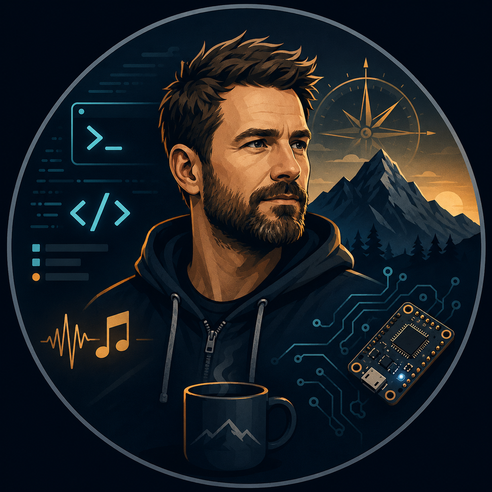

PolarisNova
Selbst hostbare Projekt-, Kunden-, Aufgaben-, Zeit-, Rechnungs-, EÜR-, Nachrichten- und Ticketverwaltung für kleine Teams und Selbstständige.
Repository ansehenIch bin Marcus Dziersan, angehender Fachinformatiker für Anwendungsentwicklung. Ich entwickle schlanke Webanwendungen, Lernprojekte und praktische Tools mit Fokus auf nachvollziehbare Struktur, echte Anwendungsfälle und saubere Dokumentation.

Meine Projekte entstehen aus konkreten Problemen, Lernzielen und technischen Experimenten. Ich arbeite bevorzugt mit klassischer Webtechnik, weil sie nachvollziehbar, gut hostbar und für viele reale Anwendungen völlig ausreichend ist.
Die folgenden Repositories zeigen unterschiedliche Facetten: Webanwendung, Lernspiel, Java-Game, Notfall-Demo, Embedded-Webserver, Hardware-Dokumentation und kleine Tools.
Selbst hostbare Projekt-, Kunden-, Aufgaben-, Zeit-, Rechnungs-, EÜR-, Nachrichten- und Ticketverwaltung für kleine Teams und Selbstständige.
Repository ansehenBrowserbasiertes Lernspiel zur JSON-Validierung mit Missionen, eigenem Validator, Compendium und Fortschrittsspeicherung.
Repository ansehenJava-Swing-Retro-Jump’n’Run mit eigener Game-Loop, Kollisionserkennung, Physik, Levelsystem und klassischem 2D-Rendering.
Repository ansehenPrivates Demo-System für QR-basierte Notfallinformationen mit PHP, JSON-Datenhaltung, Adminbereich und QR-Druck-Anbindung.
Repository ansehenESP8266-Testprojekt mit Weboberfläche, LittleFS-Konfiguration, JSON-Statusausgabe und OTA-Firmware-Upload.
Repository ansehenNachbau des Düsseldorfer Lichtzeitpegels mit WS2812B-LEDs, Arduino UNO und RTC-Modul inklusive ausführlicher Verkabelungsdokumentation.
Repository ansehenDer Schwerpunkt liegt auf Technologien, die auf normalen Servern, lokalen Entwicklungsumgebungen und kleinen Geräten nachvollziehbar funktionieren.
PHP 8, MySQL, MariaDB, PDO/MySQLi, Sessions, JSON, einfache API-Endpunkte.
HTML5, CSS3, Mobile First, Vanilla JavaScript, AJAX, responsive UI ohne Build-Zwang.
Konsolenprogramme, Java Swing, JavaFX, Lernprojekte, Dateisystem, HTTP, JSON.
Arduino, ESP8266, ESP32, OLED, Sensorik, LittleFS, OTA, einfache Webserver.
Ich baue Software lieber verständlich, wartbar und betreibbar – nicht größer, lauter oder komplizierter als nötig.
Mein GitHub-Profil zeigt aktuelle Projekte, technische Experimente und Dokumentationen. Für Recruiter und technische Ansprechpartner ist GitHub der beste Einstieg.
Marcus Dziersan
Ferdinandstr. 2
44536 Lünen
Deutschland
E-Mail: kontakt@marcus-dziersan.net
Webseite: mdwebdev.de
Marcus Dziersan
Ferdinandstr. 2
44536 Lünen
Die Inhalte dieser Webseite wurden mit größter Sorgfalt erstellt. Für die Richtigkeit, Vollständigkeit und Aktualität der Inhalte wird jedoch keine Gewähr übernommen. Diese Webseite dient der persönlichen Portfolio-Darstellung und verweist auf öffentlich zugängliche Projekt-Repositories.
Diese Webseite enthält Links zu externen Webseiten, insbesondere zu GitHub. Auf deren Inhalte besteht kein Einfluss. Für fremde Inhalte ist stets der jeweilige Anbieter oder Betreiber verantwortlich. Verlinkte Seiten wurden zum Zeitpunkt der Verlinkung geprüft; eine permanente Kontrolle ohne konkreten Anlass ist nicht zumutbar.
Die auf dieser Webseite erstellten Inhalte, Texte, Grafiken und Gestaltungen unterliegen dem deutschen Urheberrecht. Eine Nutzung, Vervielfältigung oder Weitergabe außerhalb der gesetzlichen Grenzen bedarf der vorherigen Zustimmung des jeweiligen Rechteinhabers.
Verantwortlich für die Datenverarbeitung auf dieser Webseite ist:
Marcus Dziersan
Ferdinandstr. 2
44536 Lünen
Deutschland
E-Mail: kontakt@marcus-dziersan.net
Diese Webseite ist als statisches Portfolio aufgebaut. Es gibt kein Kontaktformular, keinen Newsletter, keinen Login-Bereich, kein Tracking, keine eingebundenen Analyse-Dienste und keine bewusst gesetzten Marketing-Cookies.
Beim Aufruf dieser Webseite können durch den Hostinganbieter technisch notwendige Zugriffsdaten verarbeitet werden. Dazu können insbesondere IP-Adresse, Datum und Uhrzeit des Zugriffs, aufgerufene Datei, Referrer-URL, Browsertyp, Betriebssystem und übertragene Datenmenge gehören.
Die Verarbeitung erfolgt zur technischen Bereitstellung, Stabilität und Sicherheit der Webseite. Rechtsgrundlage ist Art. 6 Abs. 1 lit. f DSGVO, da ein berechtigtes Interesse am sicheren und störungsfreien Betrieb der Webseite besteht.
Wenn per E-Mail Kontakt aufgenommen wird, werden die übermittelten Daten zur Bearbeitung der Anfrage verarbeitet. Dazu gehören insbesondere die E-Mail-Adresse, der Inhalt der Nachricht und freiwillig mitgeteilte Angaben. Diese Daten werden nicht ohne Einwilligung weitergegeben.
Diese Webseite verlinkt auf GitHub. Beim Anklicken eines externen Links wird die Webseite verlassen. Für die Verarbeitung personenbezogener Daten auf GitHub ist der jeweilige Betreiber der externen Plattform verantwortlich.
Diese Webseite verwendet keine eigenen Tracking-Cookies und keine Analysewerkzeuge wie Google Analytics, Matomo oder vergleichbare Dienste. Sollten durch den Hostinganbieter technisch notwendige Cookies oder Sicherheitsmechanismen eingesetzt werden, erfolgen diese außerhalb der aktiven Gestaltung dieser statischen Seite.
Personenbezogene Daten werden nur so lange verarbeitet, wie es für den jeweiligen Zweck erforderlich ist oder gesetzliche Aufbewahrungspflichten bestehen. Server-Logfiles werden in der Regel durch den Hostinganbieter nach dessen technischen und rechtlichen Vorgaben gelöscht.
Betroffene Personen haben im Rahmen der gesetzlichen Voraussetzungen das Recht auf Auskunft, Berichtigung, Löschung, Einschränkung der Verarbeitung, Datenübertragbarkeit sowie Widerspruch gegen bestimmte Verarbeitungen. Zudem besteht das Recht, sich bei einer Datenschutzaufsichtsbehörde zu beschweren.
Eine automatisierte Entscheidungsfindung oder ein Profiling findet auf dieser Webseite nicht statt.
Stand dieser Datenschutzerklärung: Juli 2026.